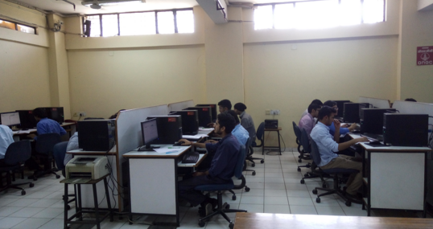

Department of Computer Science & Engineering
CSE department labs are well equipped with good configuration computers and softwares. Department comprises of various labs and details of each labs are as follows:
1. ADA / DBMS Lab
ADA /DBMS Lab has computers of configuration of which are , Acer i5 Processor 2nd generation 3.0 GHz 4 GB RAM, 500 GB HDD Space, Wipro P-IV Intel Core 2 Duo 2.8 GHz, 2GB RAM, 320 HDD Space, and one Wipro Xeon Server (P-IV Core 2 Duo 2.8 GHz, 4 GB RAM, 250 GB HDD Space). Lab is being used for running multiple subjects.
During odd semesters ADA is imparted, It requires Turbo C7 for the implementation of its algorithms. During even semester , DBMS lab uses Oracle9i Server and Client for the implementation of various SQL based Queries..
ADA/DBMS Lab View
2. Software Engineering / Object Oriented Programming Lab
SE / OOPS Lab has computers of good configuration in the form of P-IV processors with 4GB RAM and 500 GB Hard Disk Space and one IBM Server (X-series 226 (8648) Intel XEON @ 3 GHz, 1GB RAM, 73 GB HOT SWAP HDD, CD ROM , Gigabit Ethernet).This lab is being used for running various subjects in combination to make the optimal resource utilization.
In odd semester, SE lab is executed in combination with the Compiler Construction Lab. The SE lab requires Rational Rose tool of RSA for the depiction of Data Models. On the other hand Compiler Construction lab uses Turbo C++ Compiler for its programs. Software Testing lab uses Turbo C++ Compiler and Rational Robot tool for the implementation of various Software Testing based programs.
In even semester, Turbo C++ Compiler are used for the implementation of Object Oriented Programming lab programs.
SE & OOPS Lab View
3. Data Structures / Web Engg. Lab
DS / Web Engg. Lab have computers of configuration in the form of P-IV processors with 4GB RAM and 500 GB Hard Disk Space. The lab is being used for running various subjects in combination to make the optimal resource utilization. In the odd semester duration Data Structure (DS) lab is executed in. The DS lab requires Turbo C7 for the implementation of various algorithms of Data Structures while During even semester the Web Engg. Lab is executed in combination of Operating System (OS) lab. The Web Engg lab uses TOMCAT Server in addition with java interface for the implementation of various Web engg based programs. In addition to Web engg. the free slots of the lab is being used to run Applied Mathematics Lab which uses Turbo C7 for the implementation of numerical method programs.
DS & Web Lab View
4. Fundamentals of Computers / Computer Organization & Architecture Lab
This Lab has computers of good configuration in the form of P-IV processors with 4GB RAM and 500 GB Hard Disk Space. In the odd semester duration ,FOC lab for first semester students are excecuted using open office,Dia ,Msoffice ,Windows and Centos software. In even semester COA subject lab practicals are made using Jubin’s Simulator and Java software
FOC & COA Lab View
5. FOC/ITP LAB
FOC lab for first semester students are excecuted using open office,DIa ,Msoffice ,Windows and Centos software. In even semester ITP subject practicals are conducted in C language.
6. CN/JAVA PROGRAMMING LAB
Computer Networking lab uses Network Simulator NS 3.24.1 with addition to CentOS 6.4 OS for the implementation of various Computer Networking based programs.In odd semester Java Programming practicals are conducted.
7. LINUX PROGRAMMING/INFORMATION SECURITY/PROJECT LAB
The lab consists of WiFi enabled systems. The systems are dual boot running both Windows-7 as well as CentOS. The lab is used for conducting practicals of Information Security in C language during odd semester, and for conducting practicals of operating systems on CentOS during even semester.
|
S.NO. |
Lab |
SUBJECT |
SEM |
SOFTWARE |
|
ODD SEMESTER |
||||
|
1 |
ADA/DBMS LAB |
ADA (ETCS 351) |
5th |
Turbo C7 |
|
2 |
SE / OOPS lab |
STQA (ETCS 453) |
7th |
Rational Robot |
|
3 |
SE (ETCS 353) |
5th |
RSA |
|
|
4 |
DS / Web |
Data Structures (ETCS255) |
3rd |
Turbo C7 |
|
5 |
FOC / COA lab |
FOC(ETCS157) |
1st |
Open office / DIA / |
|
6. |
CN/JAVA |
JAVA (ETCS 357) |
5th |
JDK 7.0 |
|
7. |
FOC/ITP LAB |
FOC(ETCS157) |
1st |
Open office / DIA / |
|
8. |
Linux programming / Information security Lab |
IS(ETCS 451) |
7th |
TURBOC7 |
|
9 |
Project Lab |
Minor Projects(ETCS461) |
7th |
As per requirement |
|
EVEN SEMESTER |
||||
|
10 |
ADA / DBMS lab |
DBMS (ETCS256) |
4th |
Oracle 9i |
|
11 |
SE/OOPS LAB |
OOPS (ETCS258) |
4TH |
TURBOC7 |
12 |
DS / Web Engineering lab |
Applied Maths (ETMA 252) |
4th |
Turbo C7 |
|
13 |
Web Engg (ETCS 356) |
6th |
Notepad++ |
|
|
Tomcat server |
||||
|
Java |
||||
|
14 |
FOC / COA lab |
COA(ETCS 204) |
4th |
Jubin's Simulator |
|
Java |
||||
|
15 |
CN/JAVA |
CN(ETCS354) |
6th |
Cent OS 6.4 / |
|
16. |
FOC / ITP lab |
ITP( ETCS -154 ) |
2nd |
TurboC7 |
|
17 |
Linux programming/ Information security / Project Lab |
OS (ETCS352) (ETCS 462) |
6th |
Cent OS 6.4 / |
Department of Electronics and Communication Engineering
Electronic and Communication Engineering is concerned with applying knowledge in electronics to facilitate communication and solve engineering problems. The lab curriculum is organized such that it enables students to get a strong foundation on various aspects of Electronics and Communication Engineering such as Electronic Devices lab, Digital systems Design lab, Digital signal processing, Microprocessors and Microcontrollers, Signals & System Lab, VLSI design, Digital communication Lab, Control Systems lab, Microwave engineering Lab and Project lab etc. The students are also provided opportunities to choose specialized elective labs to focus on their identified areas of interest such as Embedded Systems lab, Mobile Computing lab, Advanced VLSI and Power Electronics lab etc.
LAB VIEW:
|
Microprocessor & Microcontroller Lab |
Electronic Devices Lab |
|
Consumer Electronics Lab |
Project Lab |
|
Analog Electronics Lab |
Microwave Engineering Lab |
|
VLSI Lab |
Communication Systems Lab |
|
DSP Lab |
Control Engineering Lab |

List of labs in ECE Department
|
S.no. |
Name of Lab |
Code |
Semester |
|
1 |
Electronics Devices Lab |
ETEC-156 |
2nd |
|
2 |
Analog Electronics– I |
ETEC-251 |
3rd |
|
3 |
Switching Theory & logic Design Lab |
ETEC-253 |
3rd |
|
4 |
Electronic Instruments & Measurements Lab |
ETEC-257 |
3rd |
|
5 |
Signals & systems Lab |
ETEC-259 |
3rd |
|
6 |
Communication system Lab |
ETEC-256 |
4th |
|
7 |
Analog Electronics –II Lab |
ETEC-254 |
4th |
|
8 |
Digital System Design Lab |
ETEC-351 |
5th |
|
9 |
Control system Lab |
ETEL-355 |
5th |
|
10 |
Microprocessors & Microcontrollers lab |
ETEC-355 |
5th |
|
11 |
Digital Communication Lab |
ETEC-357 |
5th |
|
12 |
Microwave Engineering Lab |
ETEC-352 |
6th |
|
13 |
VLSI Design Lab |
ETEC-354 |
6th |
|
14 |
Digital signal processing Lab |
ETEC-356 |
6th |
|
15 |
Optical and Wireless Communication Lab |
ETEC-451 |
7th |
|
16 |
Embedded System Lab |
ETEC-453 |
7th |
|
17 |
Satellite and Antenna Lab |
ETEC-452 |
8th |
|
18 |
Digital Image Processing Lab |
ETEC-454 |
8th |
|
19 |
Project Lab |
- |
7th/8th |
Department of Information Technology
Information Technology department labs are well equipped with computers of latest configuration with LAN connectivity and Internet connection. Department comprises of various labs and details of labs are as follows:
-
OS /CG-Multimedia LAB
The OS and CG-MM Lab have a capacity of 30 computers of Acer i5 Processor, 2nd generation 3.0 GHz 4 GB RAM, 500 GB HDD configurations. This Lab is prepared to allow students to practice and perform practical of Computer Graphics and Multimedia subject on Autodesk Maya Software. It is a 3D computer graphics software that runs on Windows, OS and Linux. By using Autodesk Maya Software students are able to create interactive 3D applications with visual effects. The Computer Graphics Lab focuses on research in curve and surface design, rendering, perception, and user interfaces. In this lab, students understand and learn the need of developing graphic applications, concept of colour generation, representation & transformation of graphical images, pictures & algorithmic development of graphic primitives. Students are also encouraged to learn basic of graphics programming on Turbo C++ software.
The Lab is well equipped with all advanced software's (Turbo C Version 4 Software) for practical applications. This lab serves as a platform for learning and implementing the Applied Mathematics lab in 'C' programming language. Lab Work is designed to help students to implement methods like Runga-kutta Method, Newton Raphson’s Method and various others. This Lab is also used for Linux & OS system programming practical. For practical implementation CentOS 6.0 is installed on the machines in the Lab. The goal of this lab is to provide a practical introduction of the internal operation of modern operating systems. The course will cover algorithms for processes and threads, mutual exclusion, CPU scheduling, deadlock, memory management and file systems.
OS /CG-Multimedia Lab View
2. Network Programming Lab
The Network Programming Lab under IT Department fulfils the Networking, Java and the Web Engineering lab requirements of the course curriculum prescribed by GGSIP University. It is well equipped with 30 systems of Acer i5 Processor 2nd generation 3.0 GHz 4 GB RAM, 500 GB HDD configuration with lab area of 72.8 Sq. mts. The students in this lab develop Networking programs, Java programs as well as programs for various Web based Applications. In networking, students get hands on training regarding the design and simulation of computer networks using Network Simulator 3 (NS3). They also learn about various network topologies and network protocols like sliding window, UDP, TCP and many others and perform socket programming. To learn JAVA programs the systems are installed with JDK1.7 and Net beans IDE which is an Open Source project environment and provides support for several languages (PHP), C/C++, JavaScript, etc.). The programs for Web Based Applications are developed using Net beans IDE and Apache Tomcat server. This lab provides the student with an opportunity to know about the various latest web technologies and a platform for research in computer networks.

Network Programming Lab View
3. The Programming Lab
The objective of the “Programming Lab” is to provide the platform for learning and implementing the fundamental principles of programming. It is well equipped with 30 systems of Acer i5 Processor 2nd generation 3.0 GHz 4 GB RAM, 500 GB HDD configurations with lab area of 59.07 Sq. mts. The students practices programming problems in various courses as prescribed by GGSIPU like Data Structures, Object Oriented language, Algorithm and Design, Applied Mathematics and Introduction to Programming in ‘C’ by practicing various programs in Turbo C/C++ Software. The Lab is well equipped with advanced software (Turbo C++ Software) for practising programming in multiple areas.

The Programming Lab View
4. FOC/ITP Lab
This Lab has computers of good configuration in the form of Core-i5 processor 2nd generation with 4GB RAM and 500 GB Hard Disk Space. In the odd semester duration , FOC lab for first semester students is excecuted using open office, Dia , Msoffice ,Windows and Centos software. In even semester, ITP subject practicals are conducted in C language.

FOC/ITP Lab View
5. ADA/MATHS LAB
ADA/MATHS :- has computers of configuration of which are , Acer i5 Processor 2nd generation 3.0 GHz 4 GB RAM, 500 GB HDD Space, The students practices programming problems in various courses as prescribed by GGSIPU like Data Structures, Object Oriented language, Algorithm and Design, by practicing various programs in Turbo C/C++ Software. The Lab is well equipped with advanced software (Turbo C++ Software) for practicing programming in multiple areas. In the odd semester duration Data Structure (DS) lab is executed in. The DS lab requires Turbo C7 for the implementation of various algorithms of Data Structure, Applied Mathematics Lab which uses Turbo C7 for the implementation of numerical method programs.
6. Language Lab
Language Lab of MSIT is well equipped with adequates hardware and Software to cater to the courses based on developing linguistic and communications proficierroy of the engineering graduates.
The lab has 2D computers with inyernet connection.All the computers are equipped with Orell Digital Language Lab software to help students perform various activities to practice varied language skills such as reading, writing, listening and speaking.The lab is particularly important component of the 5th Semester course Communication Skills for Professional Lab.
7. Project Lab
This Lab is used for Minor and Major Project for Final Year Students.

Project Lab View
|
S.No |
Lab |
Subject |
Semester |
Software |
|
|
1 |
OS /CG-Multimedia LAB |
CG-Multimedia(ETCS-257) |
3rd Sem |
Turbo C |
|
|
2 |
Network Programming Lab |
ACN Java Programming |
7th Sem 5th Sem |
JDK1.7 and Net beans IDE |
|
|
3 |
Programming Lab |
Wireless Communication Cryptography and Network Security(ETIIT-455) |
7th Sem 7th Sem |
Turbo C, NS3 |
|
|
4 |
FOC/ITP Lab |
FOC(ETCS-157) |
Libre, DIA, MS Office |
||
|
5 |
ADA/MATHS LAB |
Data Structure(ETCS-255) ADA(ETCS 351) |
3rd Sem 5th Sem |
Turbo C |
|
|
6 |
Language Lab |
Communication Skills for Professionals(ETHS-351) |
5th Sem |
Orell |
|
|
7 |
Project Lab |
Minor Project(ETIT-463) |
7th Sem |
||
Department of Electrical and Electronics Engineering
The Electrical & Electronics Engineering Department at MSIT is fully equipped with state-of-the-art equipment in its various laboratories to provide research experiences and training which supports the concepts learnt in theory subjects of course curriculum. The department currently offers two laboratory courses to undergraduate students of all the branches at the college and 10 additional laboratories to undergraduate students of EEE branch exclusively.
The department is quite boastful about a few hardware laboratories like: Machine Lab, Power System Lab, Measurement & Instrumentation Lab, Electric Drives Lab and Power Electronics Lab.
Besides the above mentioned hardware laboratories of the department, there is a computer lab with latest Intel i5 processors. This lab acts host to all software based requirements of the department. It is equipped with Matlab software package with tool packages including Neural and Fuzzy System, Image Processing, Digital Signal Processing, Control Systems and Optimization Tool Box. It has additional software namely, DigSilent Power Factory with 25 nodes for study and analysis of power system.
|
Power Systems Lab. |
Soft Computing Lab/Scientific Computing Lab./ Advanced Control Lab.
|
|
Power Electronics Lab |
Circuits & Systems Lab |
|
Electrical And Electronics Measuring Instruments Lab. |
Electrical Machines Lab. |
|
Electrical Drives Lab. |
Utilization Of Electrical Energy Lab |

|
Name of Laboratory |
Major Equipment/Facilities/Usage |
|
Power Systems Lab. |
|
|
Soft Computing Lab/Scientific Computing Lab./ Advanced Control Lab. |
|
|
Power Electronics Lab |
|
|
Circuits & Systems Lab |
|
|
Electrical Machine-I Lab. |
|
|
Utilization Of Electrical Energy Lab |
|
|
Electrical Machine-II Lab. |
a) Torque b) Output power c) Input power d) Efficiency e) Input power factor
|
|
Electrical And Electronics Measuring Instruments Lab. |
|
|
Sensors & Transducers Lab. |
|
|
Electrical Technology Lab. |
|
|
Electric Drives Lab. |
|
Department of Applied Sciences
Applied Sciences is the backbone of Engineering. The Department of Applied Sciences in Maharaja Surajmal Institute of Technology comprises of Physics, Chemistry, Mathematics, Communication Skills, Organizational Behavior and Mechanical Engineering. All the laboratories have up to date experimental set ups to expose the students to new trends in the field of Applied Sciences. The workshop is also equipped with the state of the art machines. A Language Laboratory has been set up exclusively for the 3rd year students to cater to the additional load. The laboratory is equipped with systems of latest configuration.
Various laboratories in the Department are:
Applied Physics lab
Applied Chemistry lab
Applied Mechanics lab
Workshop
Engineering Graphics lab
Language lab
Applied Physics Lab
Physics is an experimental science. The concepts and relationships introduced in the lecture part of the course describe the general nature and behavior of real phenomena. Physics laboratories provide an experimental foundation for the concepts introduced in the lectures. It is important that student have an opportunity to verify some of the ideas for themselves.
The experiments in Applied Physics Lab are designed to illustrate phenomena in different areas of Physics and to expose students to measuring instruments, conduct the experiments with interest and an attitude of learning. This course on Physics lab is designed with 12 experiments in each semester. It is common to all branches of Engineering in B. Tech. Ist year. The objective of the course is to offer the students essential exposure to various experimental skills. The experiments conducted in the Physics Lab relate to the areas of Physical Optics, Lasers, Fiber Optics, Sound, Mechanics, Electricity & Magnetism and Basic Electronics. The students also learn to use tools such as Screw gauge, Vernier Calipers, Physical Balance, Spectrometer and Microscope.
Applied Chemistry Lab
This Lab is prepared for B. Tech. students to perform experiments of Applied Chemistry and Environmental Studies subjects. The lab is well equipped with all necessary apparatus and glassware. The chemistry lab is equipped with Water Distillation Unit, BOD Measurement Unit, pH Meter, Conduct meter, Heating Oven, Hot Plate Magnetic Stirrer and Physical Balance. The experiments in the Chemistry Lab include Volumetric analysis, surface tension , viscosity, Proximate analysis of coal, pH conductivity, moisture content, TDS of water/ soil/sludge samples, strength of residual chlorine, among others.
Engineering Mechanics Lab
The objective of the lab is to perform experiments which are related to engineering mechanics subject (Statics and Dynamics) in order to understand the behavior of different mechanical equipments and verify the theory of Engineering Mechanics. The Engineering Mechanics Lab consists all essential instruments such as Screw Jack, Truss, Simply Supported Beam, Jib Crane, Wheel And Axle Weight Lifting Machine, Weight Lifting Machine by Worm and Worm Wheel, Bell Crank Lever, Inclined Plane For Statics Friction etc.
WORK SHOP
The Applied Sciences Workshop is prepared for the Ist year students of all streams to practice and develops skills to use machine, equipments, tools and measuring instruments. The workshop practice lab includes practical work in Carpentry, Welding, Fitting, Foundry And Sheet Metal Shop. The dedicated and experienced teachers in workshop assist the students with their practices. The workshop contains all necessary equipments such as Spot Welding Machine, Arc Welding Machine, Power Hacksaw Machine, Grinding Machine, Oxy Acetylene Welding, and Drilling Machine.
Engineering Graphics Lab
The fully air conditioned Engineering Graphics Lab is used for the students of B Tech. Ist Year in all streams of Engineering. The students learn basic concept of lettering, scales, and orthographic projections of points, lines, planes solids and isometric projection of various objects. Engineering Graphics Laboratory is complete with all the equipments such as Drawing Boards and module of different types of solids with working capacity of 75 students. We have dedicated and experienced teachers in the Lab to assist the students with their experiments.
Language Lab
This Lab is prepared for the Vth semester B. Tech students to perform Listening, Speaking and reading activities as a part of the Communication Skills for Professional subject. The Language lab is equipped with 30 computers with the following configuration:
ACER, CPU P-V Core i5 processor, 2nd generation,3.0 GHz, 4GB DDR3 RAM,500 GB HDD, DVD R/W, Keyboard, Optical Mouse, TFT 18.5 Color Monitor, 600 V APC UPS 23, HP MSIT 308 CPU 351, Intel Core 2 Due, 2.93 GHz, 4 GB RAM,500 GB HDD, DVD R/W, Keyboard, Optical Mouse, TFT 19.5 Color Monitor, 650 V APC CPU 7.
UPS APC 600V 30
All the systems in the Language Lab have Orell Digital Language Lab Software installed. The software is used for various communicative activities such as, Listening and Comprehension Reading, Writing, Conversation, Oral Presentation etcetera.
Central Library
Maharaja Surajmal Central Library supports the teaching & research programmes of three Institutes namely, Maharaja Surajmal Institute, Maharaja Surajmal Institute of Technology & Maharaja Surajmal Institute of Pharmacy. All students, faculty members and employees of the Institute are entitled to make use of the Library facilities. The Library has a well-stocked fully computerized library with latest editions of books by eminent authors & is having a huge collection of books on education, management, computer science, engineering, pharmacy, science and humanities to cater to the needs and requirements of the faculty as well as students.
Library has also a Research Wing for scholars where scholars are getting special reference material and rare collections of manuscripts for their research work on community.
BOOK BANK
Students can avail Book Bank facility which was initiated during 2006-2007. All the students joining the institute are being given a set of text books every year. This has come as a boon to the students who do not have to buy costly books for their academic preparations.
For more details, please visit:
https://sites.google.com/site/centrallibrarymaharajasurajmal/
HOSTEL AND CANTEEN
Hostel : The Maharaja Mahendra Pratap Hostel provides accommodation to around 200 boys and 100 girls in a spacious and elegant four-storeyed building with all connected facilities. Hygienic and nutritious food is provided at a reasonable cost.
Staff Accommodation : Quarters are provided to the teaching and non teaching staff with all latest facilities on reasonable charges. All the quarters are well furnished.
Canteen : The canteen of MSIT is well organized having a seating capacity of 60-70 persons simultaneously with clean surroundings. The eatables of good quality are available at reasonable cost.
SPORTS
Institute has well maintained play ground for various games such as football,volleyball, cricket, badminton etc. Facilities for indoor games such as carrom, table tennis, chess and chinese checkers are also available. These extra curricular activities help in building up personality and confidence in the students. Bank: The institute has on campus banking facility .


{kind=link}